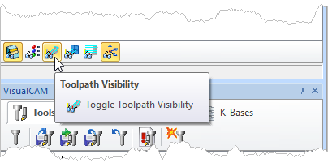

Toolpaths can be combined to machine complex objects. In our How to Generate a Toolpath example, we showed you how to generate a single 2 Axis Pocketing toolpath. However, you might of noticed that example only cut the bottom portion pocket. There is also a pocket above it that has different geometry.
Note that all roughing and finishing toolpaths can be generated in any order. Re-Roughing requires a previous Roughing toolpath to be generated and simulated first. However when completed, it is a good practice to have each toolpath appear in the Machining Job in the order you plan to machine them. You can change the order of the toolpaths after you generate them.
In the example below we create the 2 Axis Pocketing toolpath for the top level of the pocket from a copy of the previous toolpath. We will them move it up in the Machining Job.
1.First read How to Generate a Toolpath topic and then proceed.
2.Select the Program tab.
 MILL Module shown, Similar for MILL-TURN, TURN and Profile-NEST |
3.Select a toolpath from the Machining Job, right-click and select Copy from the menu. Note: You can use the Clone command to perform the Copy/Paste functions at the same time.
Machining Browser: Copy an Operation - Premium Configuration Shown |
4.Now right-click on the toolpath again and select Paste.
5.A copy of the toolpath will appear in the Machining Job below the original.
 MILL Module shown, Similar for MILL-TURN, TURN and Profile-NEST |
6.Now select the second operation, right-click and select Rename.
MILL Module shown, Similar for MILL-TURN, TURN and Profile-NEST |
7.The name of the operation will be activated for editing. Change the name as desired and then select anywhere outside of the name to accept the edit. In this example, we changed the name to 2 1/2 Axis Pocketing (Upper).
MILL Module shown, Similar for MILL-TURN, TURN and Profile-NEST |
8.Now left-click on the folder to the left of the copied operation and Drag it up until you see a horizontal bar appear. This line indicates to you where in the Machining Job tree the operation will go if you release the left-mouse button.
When you see the horizontal bar appear above the operation where you want to move to, release the mouse and the operation will move to that location.
MILL Module shown, Similar for MILL-TURN, TURN and Profile-NEST MILL Module shown, Similar for MILL-TURN, TURN and Profile-NEST |
9.Now right-click on the operation you just moved and select Edit to display the toolpaths operation dialog.
MILL Module shown, Similar for MILL-TURN, TURN and Profile-NEST |
10. The remaining procedure is similar to How to Generate a Toolpath so we will not show each dialog. From the Control Geometry tab select the Remove All button to remove the machining regions from this list.
11. Now pick the Select Curve/Edge Regions button and the dialog will minimize.
Now pick the Select Curve/Edge Regions button and the dialog will minimize.
12.Select the face edges around the top perimeter of the upper pocket. Note: If you press the <Shift> key while selecting face edges, one left-click will select the entire chain of face edges! Then right-click or press <Enter> to continue.
13.Pick the Cut Levels tab and change the Location of Cut Geometry to At Top.
14. The remaining tabs and parameters can remain the so we pick Generate to calculate the toolpath and display it on the screen.
15. If you do not see the toolpath displayed, select the Toggle Toolpath Visibility icon located at the bottom of the Machining Browser.
 MILL Module shown, Similar for MILL-TURN, TURN and Profile-NEST |